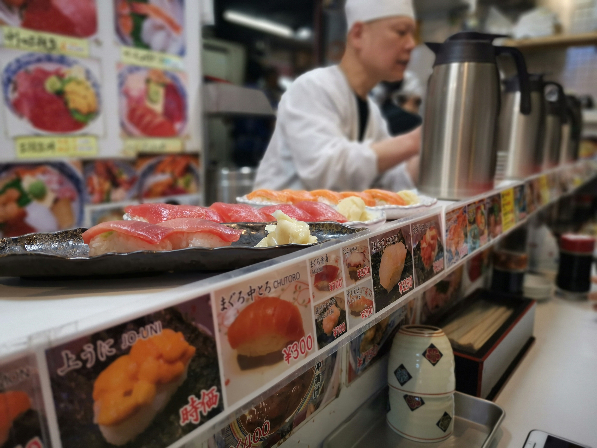
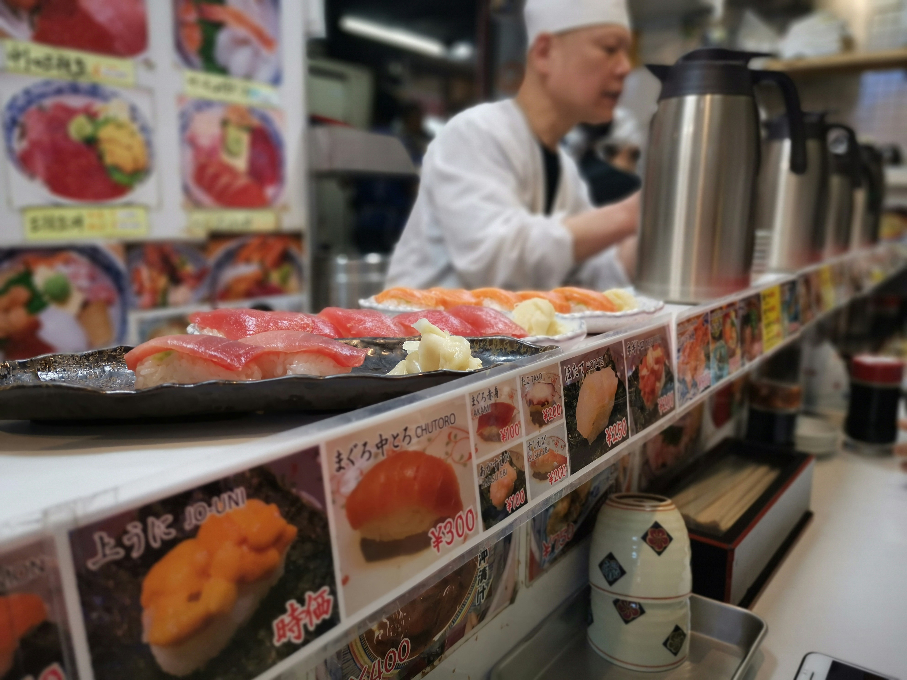
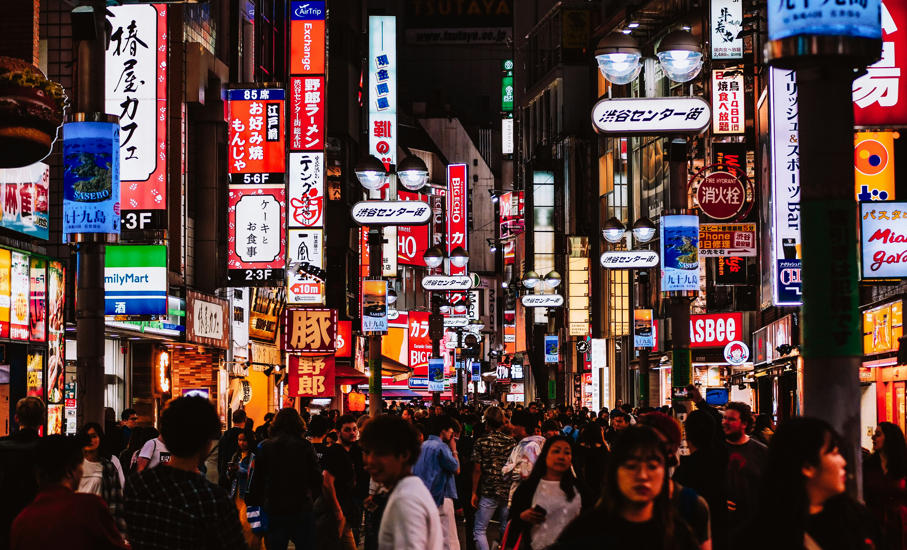
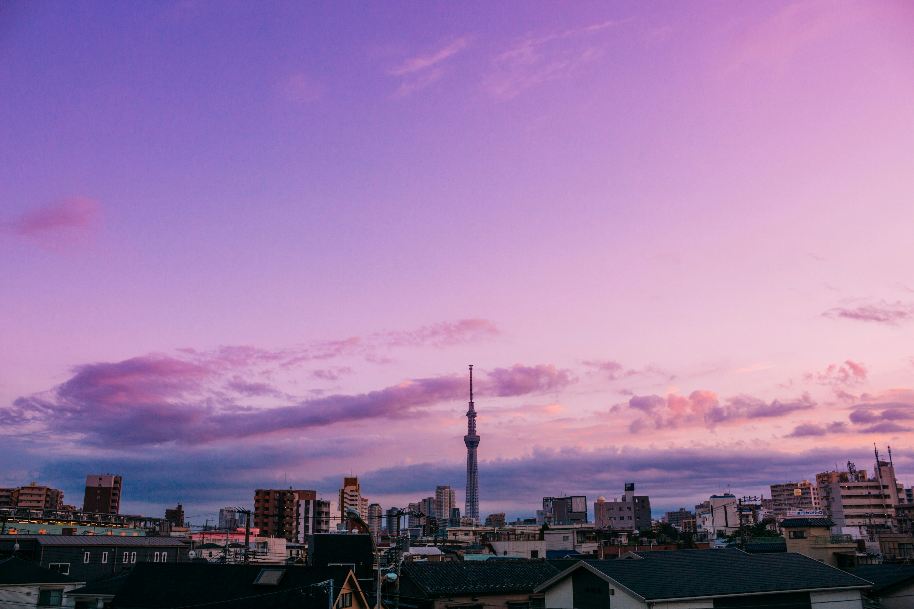
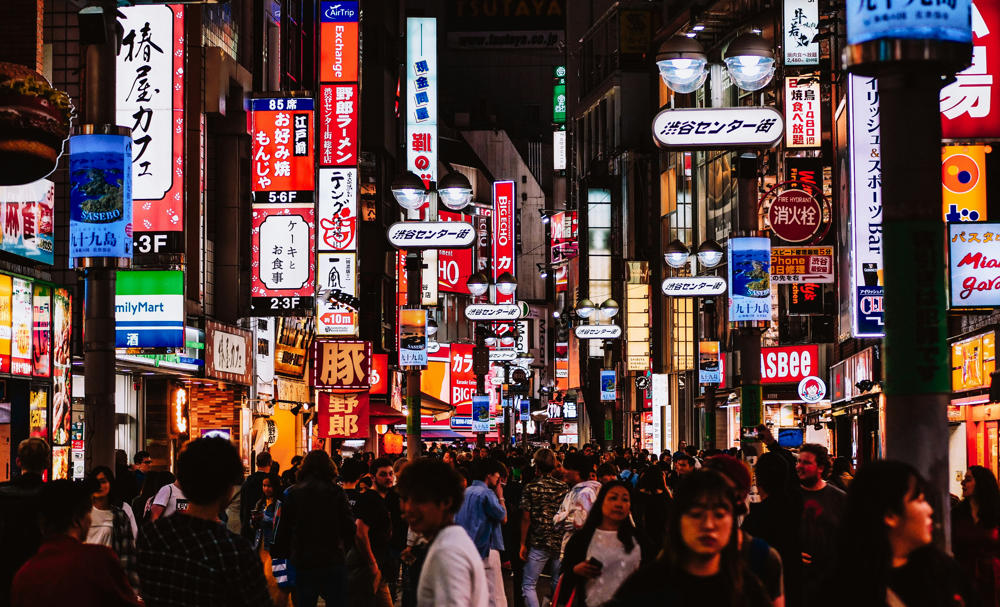
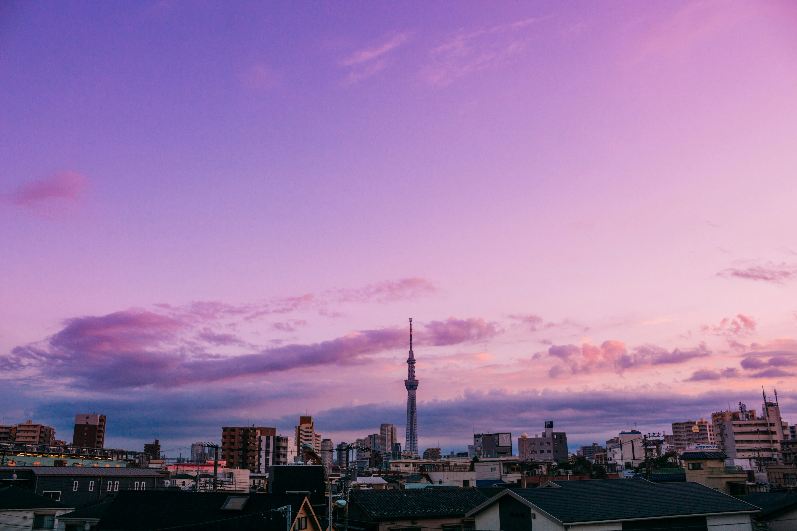

Why Tokyo?
Tokyo, the New York of Eastern Asia
Tokyo is one of the most populous cities in the world and the second-most-populated capital globally. Located at the head of Tokyo Bay, Tokyo is part of the Kantō region on the central coast of Honshu, Japan's largest island. Before the 17th century, Tokyo, then known as Edo, was mainly a fishing village. It gained political prominence in 1603 and by the mid-18th century, Edo was among the world's largest cities, with over a million residents. Following the Meiji Restoration in 1868, the imperial capital in Kyoto was moved to Edo, and the city was officially renamed Tokyo.
As of 2023, the city is home to 29 of the world's largest companies listed in the annual Fortune Global 500. Tokyo is an international research and development hub and an academic center with several major universities. Including the Greater Tokyo Area, it is the second-largest metropolitan economy in the world after New York, with a 2022 GMP estimated at $2.08 trillion (USD).The city is also recognized as one of the world's most livable ones; it was ranked fourth in the world in Global Livability Ranking, published in 2021. Tokyo has also been ranked as the safest city in the world in multiple international surveys.
Neighborhoods
My favorite neighborhoods in Tokyo

Asakusa
Surrounded by water, Asakusa is the iconic Tokyo temple complex and a town brimming with tradition. Passing through Kaminarimon, one of several temples located in this ward is Sensō-ji, a Buddhist temple dedicated to the bodhisattva Kannon.
What I like about it
Alongside being a slice of the old in the middle of metropolitan Tokyo, Asakusa is home to a bustling shopping street, Nakamise, where you can find a lot of traditional arts and crafts. It's also filled with some of the best restaurants and food stalls you'll find in all of Tokyo.

Harajuku
Harajuku is known internationally as a center of Japanese youth culture and trend-setting fashion. In addition to all-day shopping, Harajuku has countless concept cafés where you can play with animals, like otters and mini pigs, while enjoying coffee.
What I like about it
The prominence of Japanese street fashion alone is enough reason to visit, but spending hours exploring all the boutiques and backstreets is a great draw too. The sheer diversity of style you'll encounter has to be seen to truly be believed, especially for those with an interest in fashion

Shinjuku
A major commercial center and home to the busiest train stations in all of Japan, there's a little bit of everything in Shinjuku. It also boasts a large business district, including the Tokyo Metropolitan Government Building.
What I like about it
Shinjuku has one of the most incredible shopping districts in the world. Between electronics megastores and the more high-end luxury department stores you can find, it has something for everyone. It's also not too far from Shibuya Scramble Crossing, one of the busiest pedestrian intersections in the world.
Gallery
More photos of Tokyo


 


 


